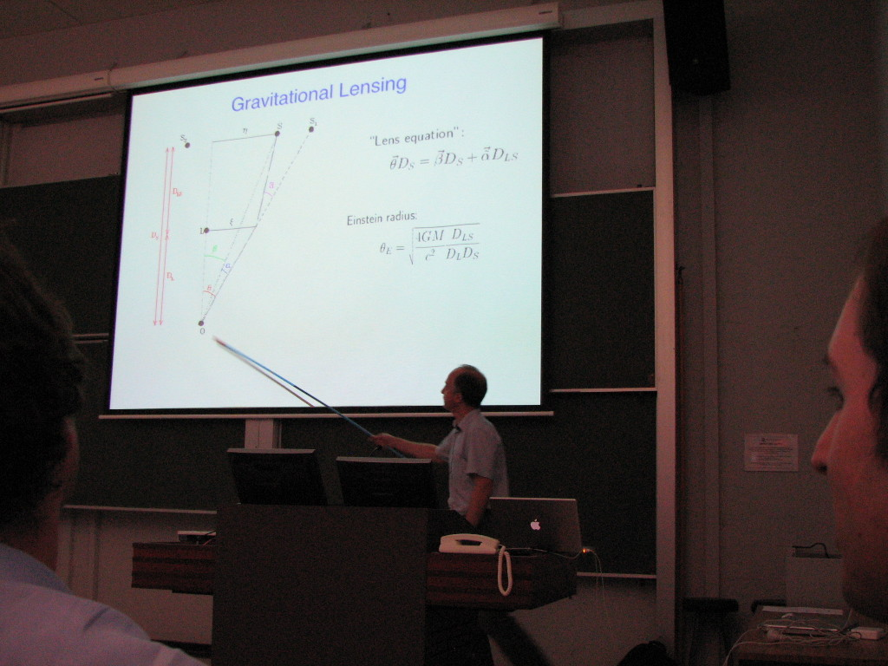
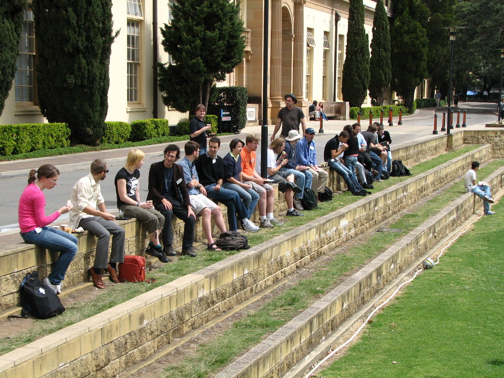
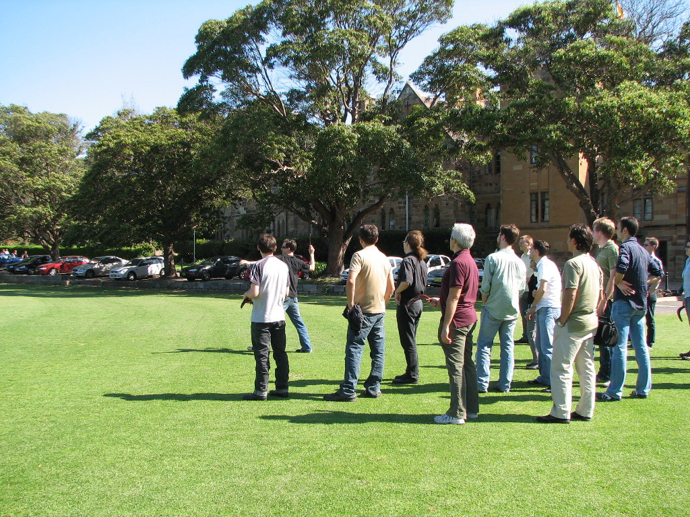
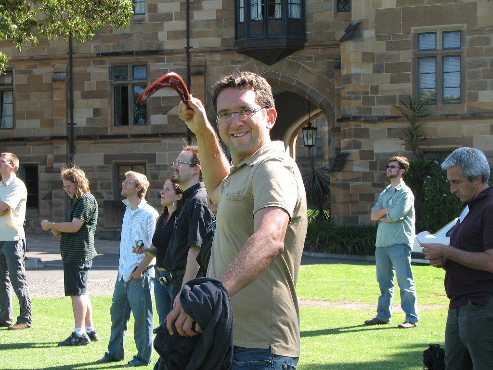
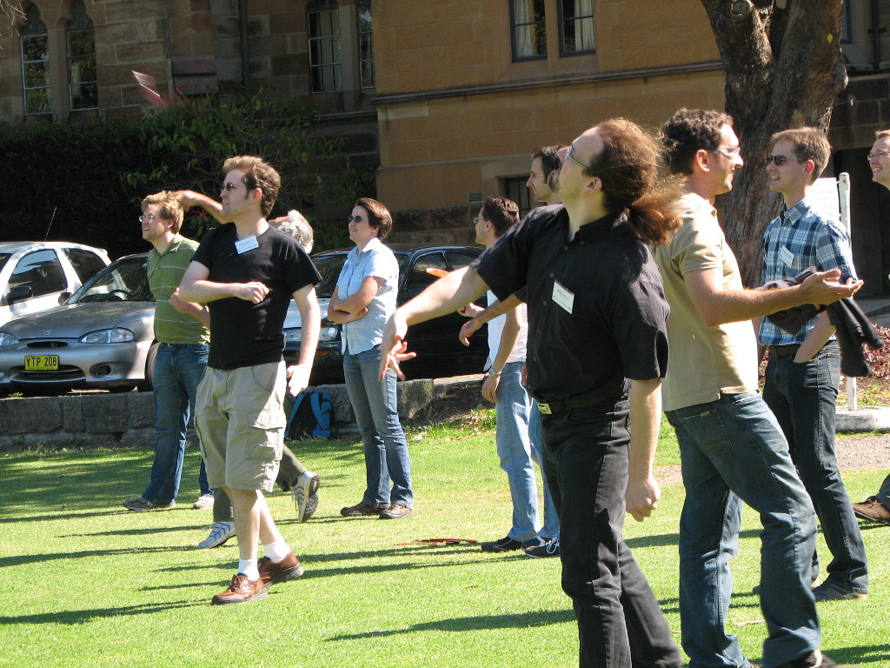
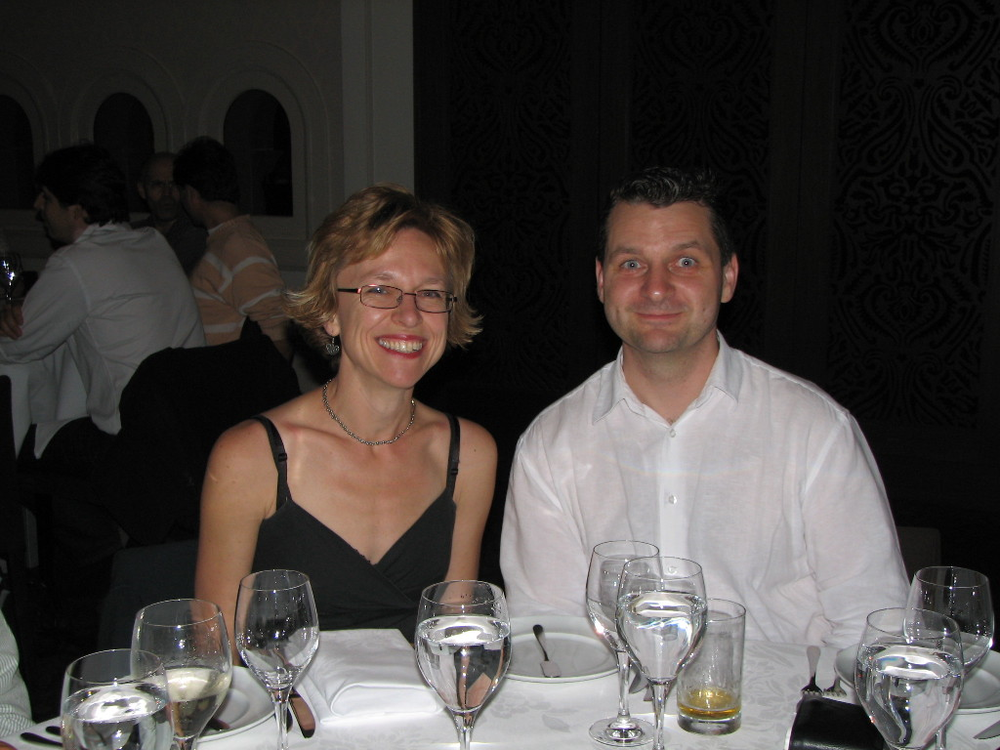
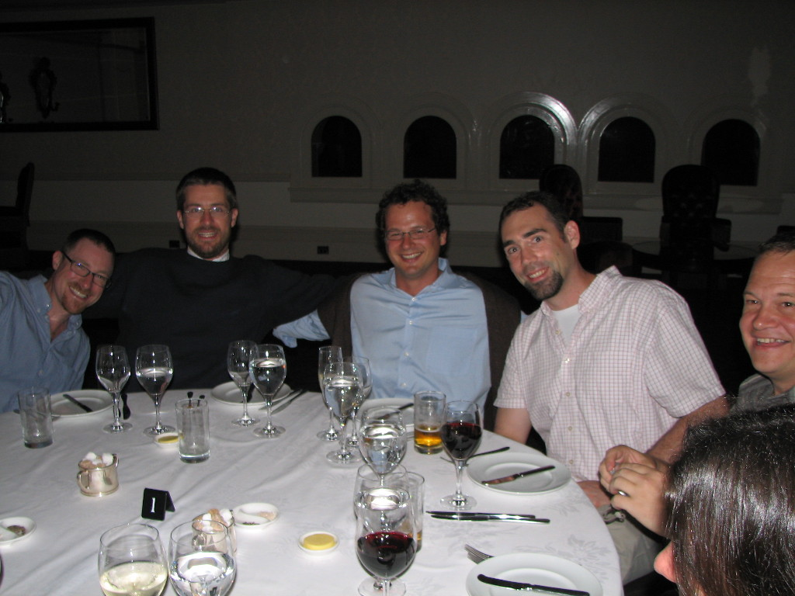
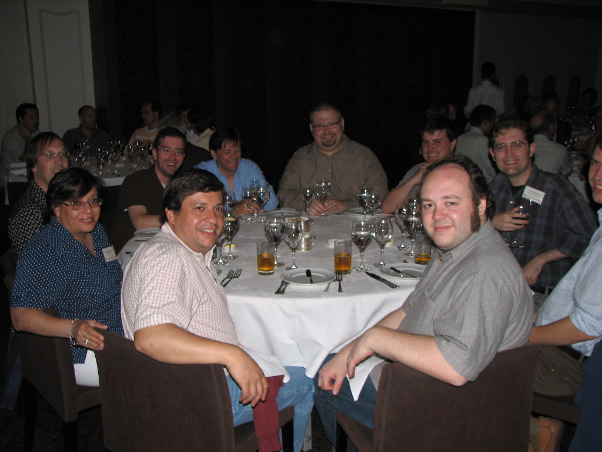
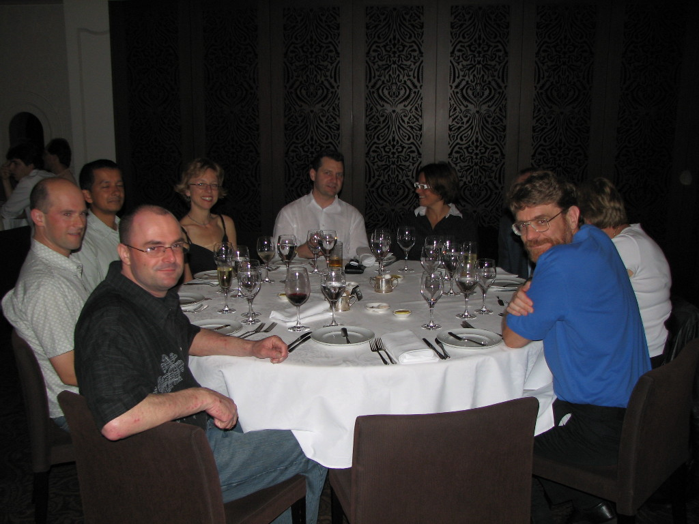

· Meet the GA team

· Research Activites

· Publications

· Ozlens 2008

· Join Us!
· Awards and Press Releases
· Links
· Contact Us
Rachel Webster (UMelb) opens the conference with an introduction to gravitational lensing.

Joachim Wambsganss (Heidelberg University) on "Microlensing and the search for planets"

Conference participants enjoying lunch outside.

Richard demonstrates the art of boomerang throwing.





